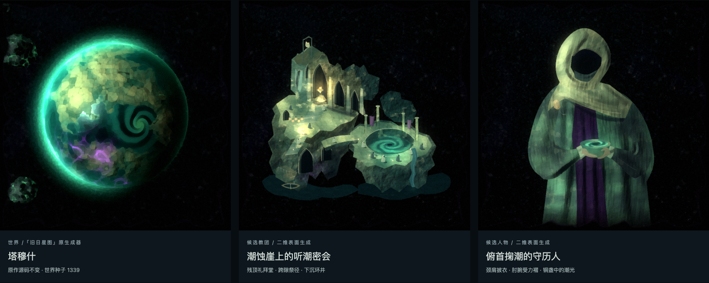
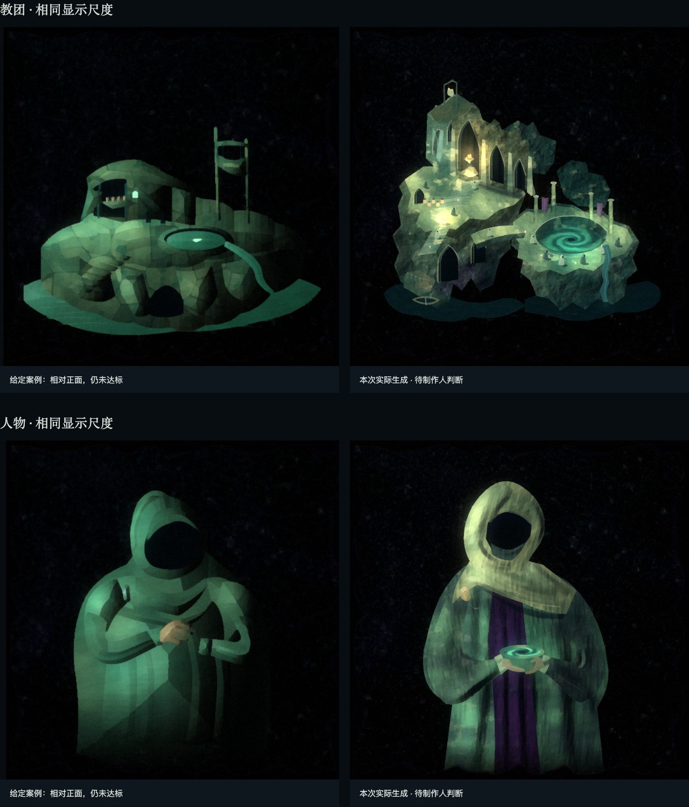
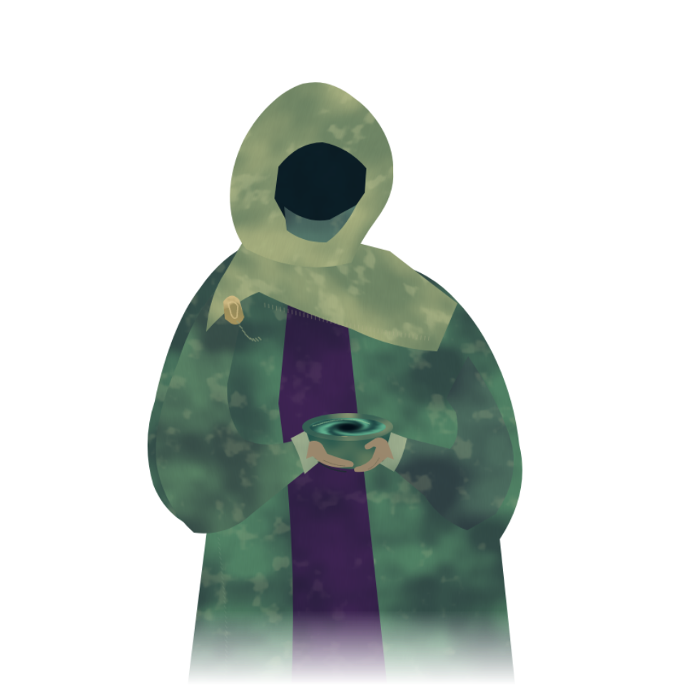
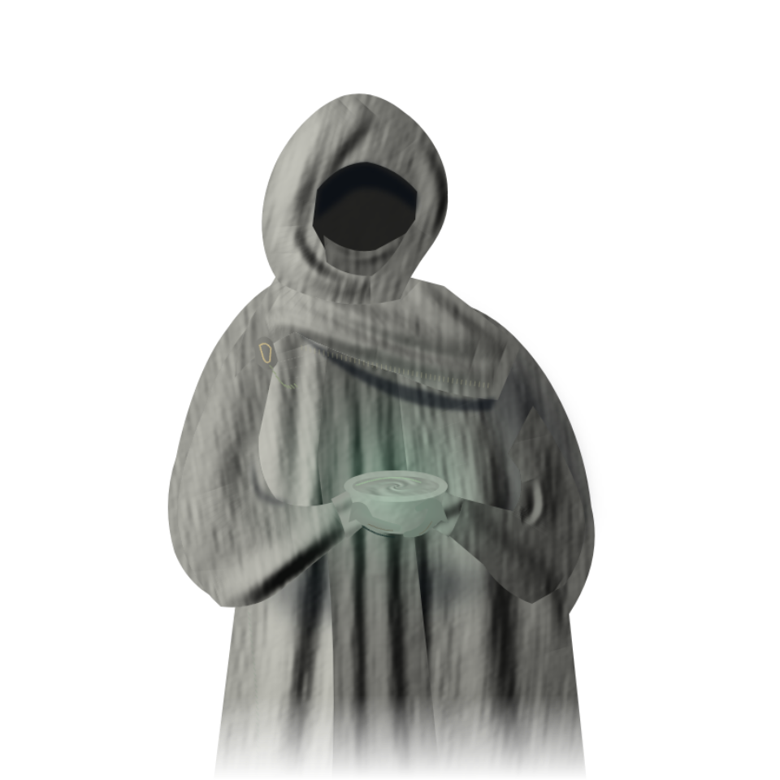
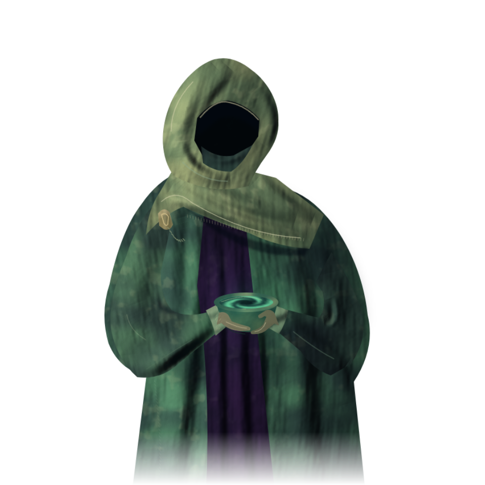
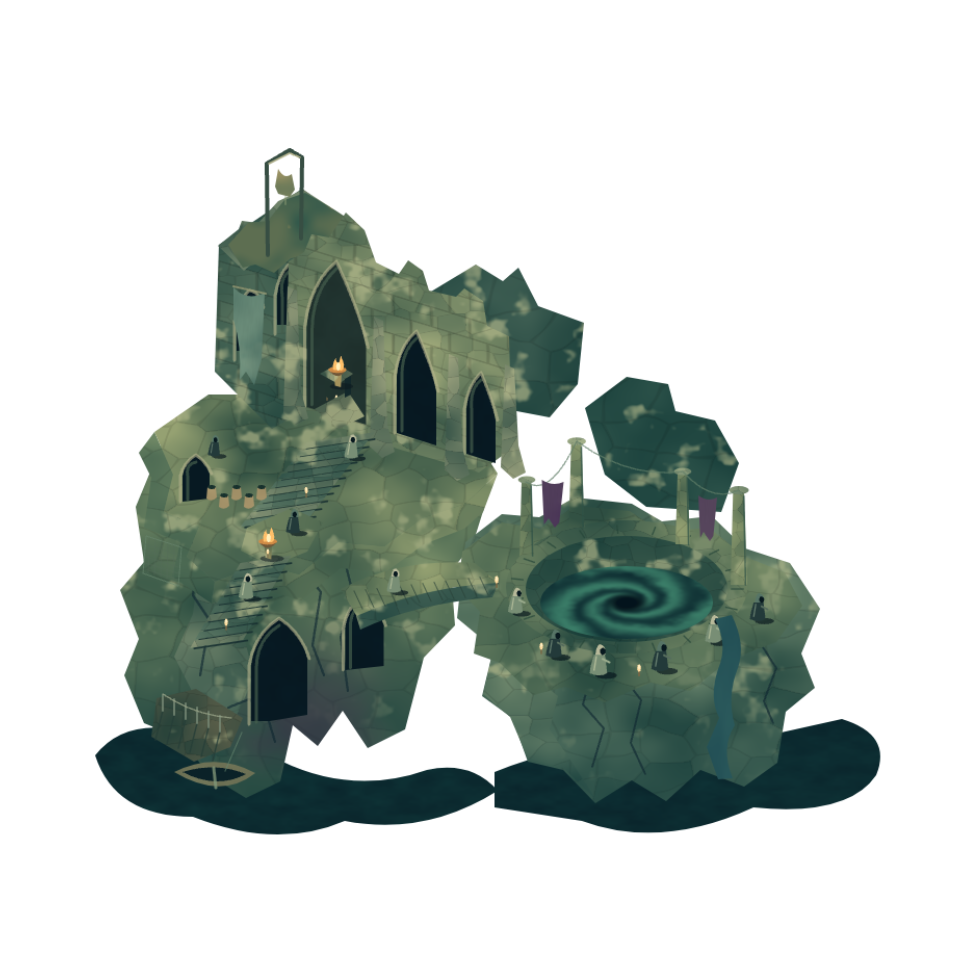
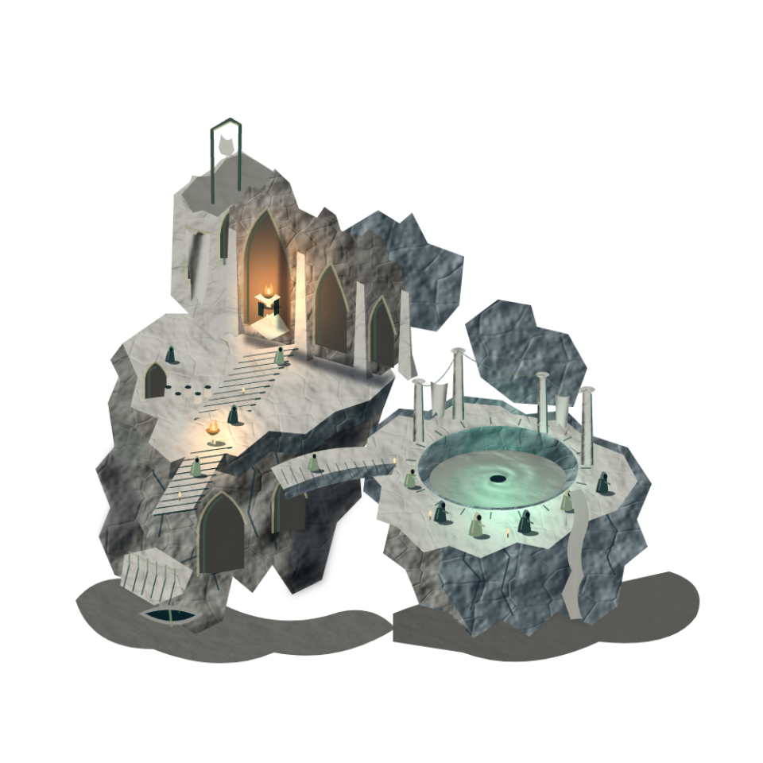
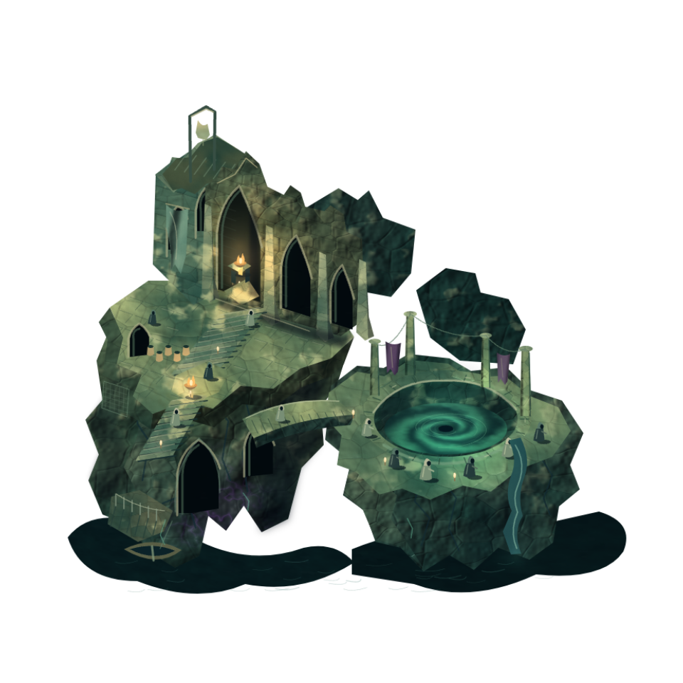

原型 0 溺亡之海 / sid 0 暗黑厚涂 / 色板 0 深渊翠 / 世界 1339 / 人物 1339。以下是实际运行输出的存档，不是生成器的输入。
打开运行生成入口 · 实际参数 · 必要检查
制作人确认上一版进步明显。本轮仅细化崖体阴面、分面明暗和局部光源；人物保持不变。查看本轮光影前后对照。








二维使用原 post 程序的 px_scale=0.68；原星球仍用原参数。此页离线可看，重新生成使用上方服务入口。